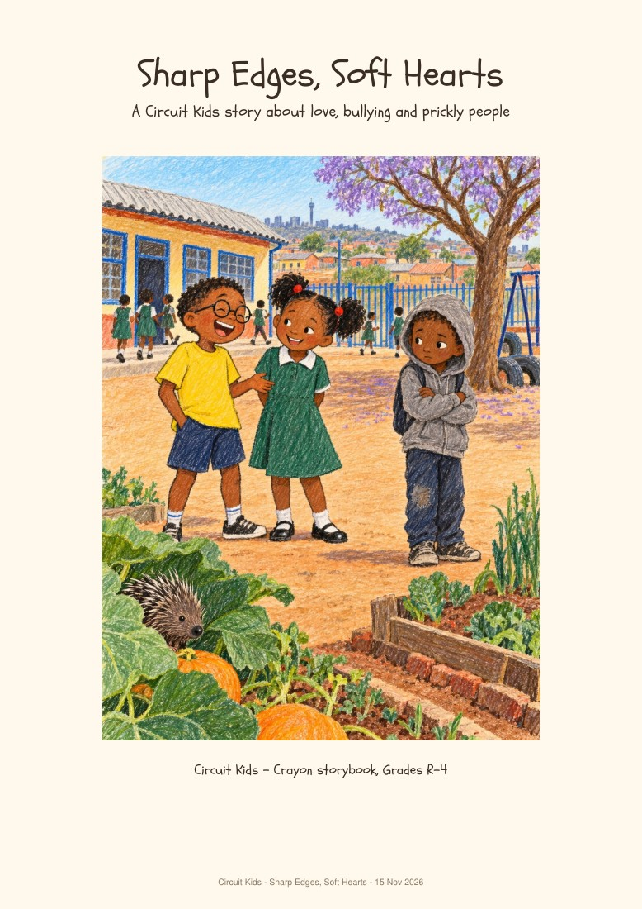

Sharp Edges, Soft Hearts
A Circuit Kids story about love, bullying and prickly people
By Circuit Kids
Crayon storybook, Grades R-4

A Circuit Kids story about love, bullying and prickly people
By Circuit Kids
Crayon storybook, Grades R-4